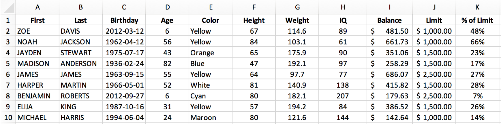

Diff Two Excel Files with Python

It's handy to be able to quickly find the differences between two Excel files. Below is a quick example of doing so using Python and pandas.
Plenty of others have solved this problem. Here's a good write-up by pbpython (and the updated version) and a version by yassineAlouini. Wanting a simple tool with a specific output, I opted to write up my own version.
1. Same Shape Files
For this first version, I assume that both files are the same shape (same number of rows and columns) and only data in individual cells may have changed: the goal is to flag changes between two versions of the same file. This is helpful to confirm that nothing unexpected has changed, particularly with a file provided to you by a third party.
Our output will highlight anything that has changed while graying out anything that stayed the same, letting us perform a quick visual inspection. The output will also include the two versions being compared in separate sheets for quick reference.
We'll use pandas DataFrames for the comparison, so we first import pandas and read the files:
import pandas as pd
df_OLD = pd.read_excel(path_OLD).fillna(0)
df_NEW = pd.read_excel(path_NEW).fillna(0)
Next we create a new DataFrame for the diff and loop through the originals to identify changes:
dfDiff = df_OLD.copy()
for row in range(dfDiff.shape[0]):
for col in range(dfDiff.shape[1]):
value_OLD = df_OLD.iloc[row,col]
value_NEW = df_NEW.iloc[row,col]
if value_OLD==value_NEW:
dfDiff.iloc[row,col] = df_NEW.iloc[row,col]
else:
dfDiff.iloc[row,col] = ('{}→{}').format(value_OLD,value_NEW)
Looping through the rows and columns of the DataFrame and accessing values with df.iloc is not the fastest way to perform this operation (see this stackoverflow discussion for some alternatives, including df.apply() and df.iterrows()). It is, however, simple for me to understand and straightforward to implement.
For each cell (looping over rows and columns), we check to see if the values in the two files are the same. If the same, we keep the unchanged value. If different, we show the change from old value to new value using an arrow: →.
Next we want to format the output to highlight changed cells. Since pandas uses XlsxWriter to save files, we can access XlsxWriter's formatting options.
To start the export, we specify that we are using XlsxWriter and assign the DataFrames to sheets.
writer = pd.ExcelWriter(fname, engine='xlsxwriter')
dfDiff.to_excel(writer, sheet_name='DIFF', index=False)
df_NEW.to_excel(writer, sheet_name=path_NEW.stem, index=False)
df_OLD.to_excel(writer, sheet_name=path_OLD.stem, index=False)
Then we'll select the DIFF sheet to apply formatting to, and define a grey_fmt for non-changed values, and a highlight_fmt for changed values.
workbook = writer.book
worksheet = writer.sheets['DIFF']
worksheet.hide_gridlines(2)
# define formats
grey_fmt = workbook.add_format({'font_color': '#E0E0E0'})
highlight_fmt = workbook.add_format({'font_color': '#FF0000', 'bg_color':'#B1B3B3'})
Using XlsxWriter conditional formatting, we can apply the appropriate format to changed and unchanged cells, using the arrow (→) defined previously in the diff.
## highlight changed cells
worksheet.conditional_format('A1:ZZ1000', {'type': 'text',
'criteria': 'containing',
'value':'→',
'format': highlight_fmt})
## highlight unchanged cells
worksheet.conditional_format('A1:ZZ1000', {'type': 'text',
'criteria': 'not containing',
'value':'→',
'format': grey_fmt})
# save
writer.save()
Our starting file, table_OLD.xlsx, includes some dummy data.

For the purposes of testing, we'll change a few cells in table_NEW.xlsx. Perhaps you can spot them:

Do you see all 6 cells that changed? If not don't worry, we'll run our excel-diff.py script to highlight the changes.
python excel-diff.py
And here you go! Our diff report, table_OLD vs table_NEW.xlsx, quickly highlights what has changed.

Wrapped in some functions, here is the whole script:
Click to expand...
import pandas as pd
from pathlib import Path
def excel_diff(path_OLD, path_NEW):
df_OLD = pd.read_excel(path_OLD).fillna(0)
df_NEW = pd.read_excel(path_NEW).fillna(0)
# Perform Diff
dfDiff = df_OLD.copy()
for row in range(dfDiff.shape[0]):
for col in range(dfDiff.shape[1]):
value_OLD = df_OLD.iloc[row,col]
value_NEW = df_NEW.iloc[row,col]
if value_OLD==value_NEW:
dfDiff.iloc[row,col] = df_NEW.iloc[row,col]
else:
dfDiff.iloc[row,col] = ('{}→{}').format(value_OLD,value_NEW)
# Save output and format
fname = '{} vs {}.xlsx'.format(path_OLD.stem,path_NEW.stem)
writer = pd.ExcelWriter(fname, engine='xlsxwriter')
dfDiff.to_excel(writer, sheet_name='DIFF', index=False)
df_NEW.to_excel(writer, sheet_name=path_NEW.stem, index=False)
df_OLD.to_excel(writer, sheet_name=path_OLD.stem, index=False)
# get xlsxwriter objects
workbook = writer.book
worksheet = writer.sheets['DIFF']
worksheet.hide_gridlines(2)
# define formats
date_fmt = workbook.add_format({'align': 'center', 'num_format': 'yyyy-mm-dd'})
center_fmt = workbook.add_format({'align': 'center'})
number_fmt = workbook.add_format({'align': 'center', 'num_format': '#,##0.00'})
cur_fmt = workbook.add_format({'align': 'center', 'num_format': '$#,##0.00'})
perc_fmt = workbook.add_format({'align': 'center', 'num_format': '0%'})
grey_fmt = workbook.add_format({'font_color': '#E0E0E0'})
highlight_fmt = workbook.add_format({'font_color': '#FF0000', 'bg_color':'#B1B3B3'})
# set column width and format over columns
# worksheet.set_column('J:AX', 5, number_fmt)
# set format over range
## highlight changed cells
worksheet.conditional_format('A1:ZZ1000', {'type': 'text',
'criteria': 'containing',
'value':'→',
'format': highlight_fmt})
## highlight unchanged cells
worksheet.conditional_format('A1:ZZ1000', {'type': 'text',
'criteria': 'not containing',
'value':'→',
'format': grey_fmt})
# save
writer.save()
print('Done.')
def main():
path_OLD = Path('table_OLD.xlsx')
path_NEW = Path('table_NEW.xlsx')
excel_diff(path_OLD, path_NEW)
if __name__ == '__main__':
main()
2. Updated Rows & Columns
Updated 2019-02-01
Suppose the rows may have been added or deleted in addition to single values changed. This updated excel-diff-2.py will highlight changes in red, new rows in green, and dropped rows in grey. Here's the full script:
Click to expand...
import pandas as pd
from pathlib import Path
def excel_diff(path_OLD, path_NEW, index_col):
df_OLD = pd.read_excel(path_OLD, index_col=index_col).fillna(0)
df_NEW = pd.read_excel(path_NEW, index_col=index_col).fillna(0)
# Perform Diff
dfDiff = df_NEW.copy()
droppedRows = []
newRows = []
cols_OLD = df_OLD.columns
cols_NEW = df_NEW.columns
sharedCols = list(set(cols_OLD).intersection(cols_NEW))
for row in dfDiff.index:
if (row in df_OLD.index) and (row in df_NEW.index):
for col in sharedCols:
value_OLD = df_OLD.loc[row,col]
value_NEW = df_NEW.loc[row,col]
if value_OLD==value_NEW:
dfDiff.loc[row,col] = df_NEW.loc[row,col]
else:
dfDiff.loc[row,col] = ('{}→{}').format(value_OLD,value_NEW)
else:
newRows.append(row)
for row in df_OLD.index:
if row not in df_NEW.index:
droppedRows.append(row)
dfDiff = dfDiff.append(df_OLD.loc[row,:])
dfDiff = dfDiff.sort_index().fillna('')
print(dfDiff)
print('\nNew Rows: {}'.format(newRows))
print('Dropped Rows: {}'.format(droppedRows))
# Save output and format
fname = '{} vs {}.xlsx'.format(path_OLD.stem,path_NEW.stem)
writer = pd.ExcelWriter(fname, engine='xlsxwriter')
dfDiff.to_excel(writer, sheet_name='DIFF', index=True)
df_NEW.to_excel(writer, sheet_name=path_NEW.stem, index=True)
df_OLD.to_excel(writer, sheet_name=path_OLD.stem, index=True)
# get xlsxwriter objects
workbook = writer.book
worksheet = writer.sheets['DIFF']
worksheet.hide_gridlines(2)
worksheet.set_default_row(15)
# define formats
date_fmt = workbook.add_format({'align': 'center', 'num_format': 'yyyy-mm-dd'})
center_fmt = workbook.add_format({'align': 'center'})
number_fmt = workbook.add_format({'align': 'center', 'num_format': '#,##0.00'})
cur_fmt = workbook.add_format({'align': 'center', 'num_format': '$#,##0.00'})
perc_fmt = workbook.add_format({'align': 'center', 'num_format': '0%'})
grey_fmt = workbook.add_format({'font_color': '#E0E0E0'})
highlight_fmt = workbook.add_format({'font_color': '#FF0000', 'bg_color':'#B1B3B3'})
new_fmt = workbook.add_format({'font_color': '#32CD32','bold':True})
# set format over range
## highlight changed cells
worksheet.conditional_format('A1:ZZ1000', {'type': 'text',
'criteria': 'containing',
'value':'→',
'format': highlight_fmt})
# highlight new/changed rows
for row in range(dfDiff.shape[0]):
if row+1 in newRows:
worksheet.set_row(row+1, 15, new_fmt)
if row+1 in droppedRows:
worksheet.set_row(row+1, 15, grey_fmt)
# save
writer.save()
print('\nDone.\n')
def main():
path_OLD = Path('v1.xlsx')
path_NEW = Path('v2.xlsx')
# get index col from data
df = pd.read_excel(path_NEW)
index_col = df.columns[0]
print('\nIndex column: {}\n'.format(index_col))
excel_diff(path_OLD, path_NEW, index_col)
if __name__ == '__main__':
main()

Closing Thoughts
This is a simple way to view the difference between two Excel files, but easily modified to fit a particular dataset or use case. Since we're using pandas DataFrames, the original data could be csv files or a database table or any other format pandas can read from. We could also reformat the output to show only changes, or present the data differently, or specify data types by column, for instance.
- All names in this dataset are fake. Any resemblance to real persons, living or dead, is purely coincidental.
- You can view the original code and files.
Library versions:
pandas 0.23.4
Python 3.6.3